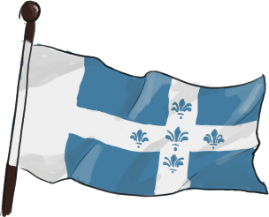
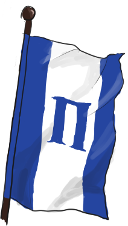
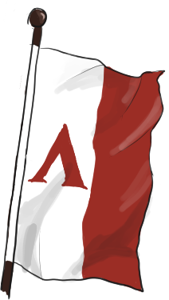
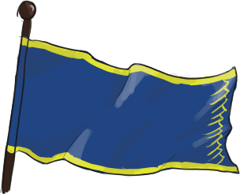
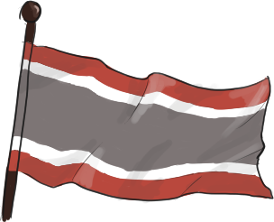
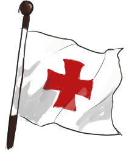

The Known World
Countries


## The Frisian Empire
*Frisian* 【中】弗蘭仙帝國【Native】Friçia
*Population: 14 million; Currency: Rivenian Gold Crowns.*
Frisia lies to the northwest of Rivian, its borders stretching up to the Northern Coast, to the borders of Marakar and the uncivilised tribes north.
Frisia was once a province under the old Rivenian empire, that broke away during the great decline in the Age of Rebirth. Having adopted Rivenian methods of governemnt and currency, Frisia has managed to organise itself into a modern and competent kingdom.
It is just over half the size of Rivian population wise, with about two-thirds the land area, but due to the Frisians' strong military tradtitions and recent pragmatic governorship, the country can generally hold its own against any outside forces.
The Empire today is ruled by the six-year-old Jan Charles Avergnion, as Charles IX, with the Queen Mother as regent, due to the sudden death of his father.


## Helios City States
*Elyrian* 【中】恒日城邦、希蘭城邦
*Population: 3 million; Currency: Elyrian Gold Talents.
Since antiquity, the cities of the southern sea have existed, being mostly independent city states forming into various coalitions, or going on their own. Once under the kingdom of Rivian, re-gaining their independence during the most recent civil war, where the House of Andolyn stepped onto the throne.
Two powers dominate these cities: the "old guard" of Helion, and the "new guard" of Herakleion.
Helion and its Theian league are masters of trade and naval warfare, and have existed in one form or another since ancient times with the ascension of the Sun God Theianos, counting within its number powerful trade cities like Makedonia and Malaes.
Herakleion, being an old rival to its northern brother, controlls the Iokharin Pact, a series of primarily military alliances formed long ago to defend against the encroachment of the Parsii Empire.
Originally, these two alliances overlapped, nor were they the only two on the peninsula, but recently, lines have become more and more divided.

## The Great Horde
*Kagul (outsiders) or Velyrian (natives)* 【中】金汗國、西汗
*Population: 7 million; Currency: Velyrian vyszh.*
Also see: Golden Khaganate
The steppe people live on the southern border of Marakar, in the great steppelands that connect east and west. Being the most accessible routes, even despite the Spirit Abyss, horse nomads have roamed the area for millennia.
These horse nomads some time ago banded together, forming the Golden Khaganate, which suddenly attacked east, west, and south for some unknown reason, perhaps to find less hostile ground.
The Great Horde is the western extension of this larger empire, being centred around the city of Velgra, now Ulan Gorol. It destroyed the old Velyrian city states and marches along the Velgra river, and is now bordering Rivian proper.

## Mauentyr
*Mauren* 【中】毛恩諦爾
*Population: 1.1 million; Currency: Invar Standard*
Mauentyr is the kingdom of the dwarves, ruled from the mountain fortress of Mam Mauen. For forever and an age, the dwarves of the Greater Tyrol Range have existed solitary and alone in cities of stone, seldom interacting with the Draconic Empires of the world, except for the odd trade in resources, and that was the status quo, for millennia.
That is, however, until the end of the Second Age of Dragonkind, and the start of the 170 years of turmoil known as the Rebirth, where the People of the Mountain saw fit to band together and create a stronger united front. After all, the dragons who ruled the old kingdoms were much more predictable than the humans who rule the new. They were right in their judgement, and many in the new fractured world have tried to invade the mountain fortress, and all have failed.

## Trier
*Trierer or Tyrelian* 【中】特麗爾
*Population: 100 thousand; Currency: Rivenian Gold Crowns*
Trier, the white city by the river, is as ancient as Rivian, forever presided over by a divine king, chosen by a Shadow Council. This King has been dragon, has been elf, and is currently aasimar, but never has a human or dwarf been chosen for the title, as in the scripture of the ancient mountains they are fickle, and impure.
Trier is the creator of the Pact of Tyrol, an alliance of four mountain nations, to counter Mauentyr, but also to act as holy knights who are sworn to maintain peace, justice, and rule of law in Dacrame. Their knights come from all backgrounds, and are often sent on far-flung missions in the name of the Gods and of Tyrol.
#### Parsii Empire See: Empire of Sun and Twisted Flax #### Tarkavia *Tarkan* *Population: 500 thousand* Tarkavia is a small kingdom on the borders of the Great Horde, north of the Tyrol Mountains. They were formed recently as one tribe, the Tarkans, conquered and unified the others in the area, during the Age of Rebirth. The country is relatively isolationist, and militaristic in the wake of the Great Horde. #### Visigean Tribes *Visigean* *Population: 1.5 million* Visigea is a loose coalition of tribes and duchies of the North, who have kept their independence, but live under an electoral system where the various dukes and chieftains elect a ‘king’ who guides the coalition as a whole. Visigea was never wholly conquered by the Rivenians, but nonetheless their culture has permeated through the land, and many are beginning to, or already have adopted a Rivenian way of governance. #### Crimon Tarthe *Crimon* *Population: 120 thousand* The Crimon of the Tarthelands are an ancient people who migrated from as far away as Marakar, and the great plains of Aseron, seeking greener pastures. They settled around the Sea of Ancients some three millennia ago, even today keeping some vestiges of their eldritch traditions, though now more human, and Velyrian than those of the true north. #### Valycia *Valycian or Velyrian* *Population: 100 thousand* The Duchy of Valycia is one of the last vestiges of the independent nations of Velyria, and even still is half the size it was at its height, a mere 31 years ago. Valycia pays tribute to Rivian, in an attempt to counter the looming presence of the Great Horde. #### Feyan *Feyan Mauren* *Population: 30 thousand* Feyan is a small duchy, created after a bloody secession from Mauentyr 170 years ago. It is a republic, with a Duke elected by his citizens every time the old one dies. Feyan is known for its silver work, and for being a major exporter of Tourmaline. Their jewellery is well desired amongst the rich, and their weaponry desired upon those wanting to hunt beasts of the night. Feyan is a member of the Pact of Tyrol. #### Amuren *Amur or Tyrelian* *Population: 60 thousand* Amur was a human duchy subjugated under Mauentyr for many many years, until it, too broke away in the same rebellion as Feyan. Amuren is a member of the Pact of Tyrol. #### Hafar *Hafar Mauren* *Population: 15 thousand* Hafar is the last member of the Pact of Tyrol, a Dwarven state that did not join Mauentyr during the years of Rebirth. They are a country famous for their weaponsmithing, and along with a sizeable population of elves, Hafarian weaponry is some of the best in the land.